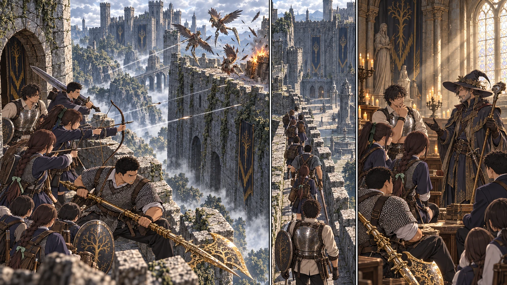

最新の本編へTURN1−50 · 同じ敵を見ている。

【DAY41 12:10｜城壁塔の外】花が二羽と数えた先で、もう一つ影が動いた。折れた壁の陰に三羽目。足に刃をつけた鳥が、火薬樽の上でこちらを見ている。先生は列の後ろから、塔の入口を空けておくよう手を振った。十三人が同じ細道へ詰まれば、引く場所からなくなる。
花と千夏は塔側、健太は二人の斜め前。槍と盾を構えても、弓の正面には立たない。大地は黄金のハルバードの穂先を下げ、低く入ってくる影に備えた。空を追って大きく振れば、仲間の弓を邪魔する距離だった。
一羽が樽を持ち上げる。花の矢が飛び、鳥の軌道が横へずれた。樽は誰もいない先の石床で砕け、火が壁を舐める。二人はすぐには追わない。煙の上へ出た翼に千夏が射ち、低く回った影を健太の盾が外へ押した。八本を使って三羽。最後の刃が石を擦って止まるまで、誰も矢を拾いに走らなかった。
【千夏の視点】待つのは得意だと思っていた。でも、目の前で羽が膨らむと、早く放してしまいたくなる。弦を引いている指より、足の方が先に逃げたがる。健太の盾は、私の前を全部塞いでいない。そこに道を一本残してくれている。私はその道だけを見る。
花が振り返った。「終わり？」千夏は折れ角の奥をもう一度見てから頷いた。「見えてた三羽は。先は、まだ」勝てたから広場が全部安全になったわけではない。それでも、前は近づくことさえ怖かった相手を、今日は順番を崩さず倒せた。戦鷹の判定は十三、屋根への移動は十一。
【13:10｜礼拝堂の屋根】陸が屋根と窓の段差を調べ、戻る時の手掛かりも確かめる。一人が降りて足元を空け、それから次。先生は最後まで上に残った。城壁塔は高い位置に、これから入る礼拝堂はその内側の屋根の下にある。蓮の地図に、初めて縦の矢印が増えた。
窓の向こうには、武器を構えていない男がいた。幅広の帽子。その下の目が、最初の一人を見て、次を見て、なかなか途切れない列を追う。「ずいぶん賑やかな来客だね。……私はロジェール。ここで探し物をしている」先生が最後に入ると、男はようやく少し笑った。
【13:40｜魔術師の話】ロジェールが追っているのは、城主の財宝ばかりではない。この城に残る古い歴史、その痕跡だという。「同じ城に入ったからといって、同じものを探しているとは限らない。でも、剣を向け合う理由にもならないだろう？」
ゴドリックへ向かうという話になると、口調が少し静かになった。接ぎ木の材料として褪せ人が狙われること。ここで倒れるのは、ただ荷を奪われるだけでは済まないこと。悠は杖を膝から浮かせ、また戻した。先生の知っているゲームの言葉が、この男には現在の出来事だった。
「なら、僕たちに教えられる技はありますか」悠が訊いた。ロジェールは剣に宿す戦技について話してくれた。杖で唱える術とは使い方が違う。知恵と商いでなら力になれるが、自分の調査を捨てて列に加わる約束まではしない。先生たちは連絡の取れる協力者を一人得た。購入と装着は、まだこれからだ。
【14:10｜礼拝堂の先】言葉の通じる人に会っただけで、気が緩む。次の鎧の足音は、そのすぐ後に来た。狭い入口を使い、通常兵二人と失地騎士一人を、同じ幅で押してこさせない。直人と大地が交代して前へ出る。先生は後ろの曲がり角を見ながら、退く者の通路を残した。
健太が盾で一撃を受けたとき、槍先が下がった。「腕に、力が入らない」葵が横へ引き、陽太がその場所へ入る。今度は全員で引き返さない。健太は入口の内側で赤い瓶を使い、他の前衛が間を支えた。追加の六本と悠の一発。敵を倒した後、握る力が戻ったことを確かめてから次へ進んだ。屋内戦の判定は七。
【15:00｜中庭の縁】扉から見えた中庭は、城壁よりずっと広かった。広場に並ぶ兵も、向こうを向いた火器も見える。中央へ出れば、あれが一度にこちらを向く。陸は壁際の道を指し、蓮は一つ前の扉を地図に太く残した。別の大部屋には、多くの腕を持つ異形の影があった。そちらの探索は今はしない。
先に犬の動きを止め、壁から追ってきた兵だけを受ける。拓海の一発、弓二人の四本。通常兵三人と犬一匹を倒しても、遠くの陣列まで追わなかった。先生が最後尾の角を曲がり、全員が次の遮蔽物へ入る。中庭の判定は十。城を空にするための戦いではない。城主へ届く一本の道を作っている。
【16:00｜中庭の先の小部屋】斧を携えた女戦士が、倒れた兵のそばに立っていた。ネフェリ・ルー。こちらの人数よりも、こちらがその兵をどう避けて通るかを見ているようだった。武器を向けず声を掛けると、彼女は先生たちが城主の兵ではないと確かめて斧を下げた。
彼女も父の命でこの城へ来た。しかし、ゴドリックの接ぎ木を見た今、命令だけがここにいる理由ではない。「人を継ぎ足して、王の強さを名乗る。私は、あれを認めたくない」そう言って、部屋の外、城の奥を見た。
大地は自分の黄金の刃へ一度目を落とした。強い武器を手に入れたことと、人から奪えば際限なく強くなってよいこと。その間には、線がある。ネフェリの怒りは、自分たちの帰還事情を知った同情ではなかった。それでも、次に向かう相手は同じだった。
先生たちが城主戦の助力を求めると、ネフェリは応じた。「あの男と戦う時は、私も力を貸す」永遠にこの列に入る誓いではなく、この戦いで肩を並べる約束。その方が、何を頼めるのか分かった。彼女自身の斧と意志が、十三人とは別にそこにある。
【16:30｜奥まった小部屋・霧の前】最後の曲がり角の先に、城主へ続く霧が見えた。脇の小部屋には祝福がある。蓮は八つ目の未解放候補として記録する。まだ触れない。誰かが倒れれば救出に使う。勝った後は城内の一か所を移動用に開く。それは、ここまで来た人から使える道になる。
先生が来た道を確かめる間に、葵が一人ずつ手足を確認した。現在の負傷者はゼロ。先生と健太の赤い瓶は三回ずつ。花の矢は八本、千夏は三本。教会にはまだ四十九本あるが、ここで矢筒を振っても出てはこない。携行してきた飲用水も使い切った。ゴドリックに挑む前に、補給を一度整える必要がある。
【教会の二十人】その間、結衣たちは床際の仮補修と見張りを続けていた。まだ遠征隊の午後の戦果は届いていない。誠と楓が直したのは、戻る人が足を取られそうだった一角だ。誰も、城の奥の勝利を知って先に祝ってはいない。
【今回の到達点】戦鷹から二人の協力者、そしてゴドリック前まで。新しい死者は出なかった。霧の向こうへはまだ入っていない。ロジェールの知識と戦技、ネフェリの助力、そしてこの道を一緒に通ってきた十三人。それをどう次の一戦へ繋ぐかが、もう目の前にある。